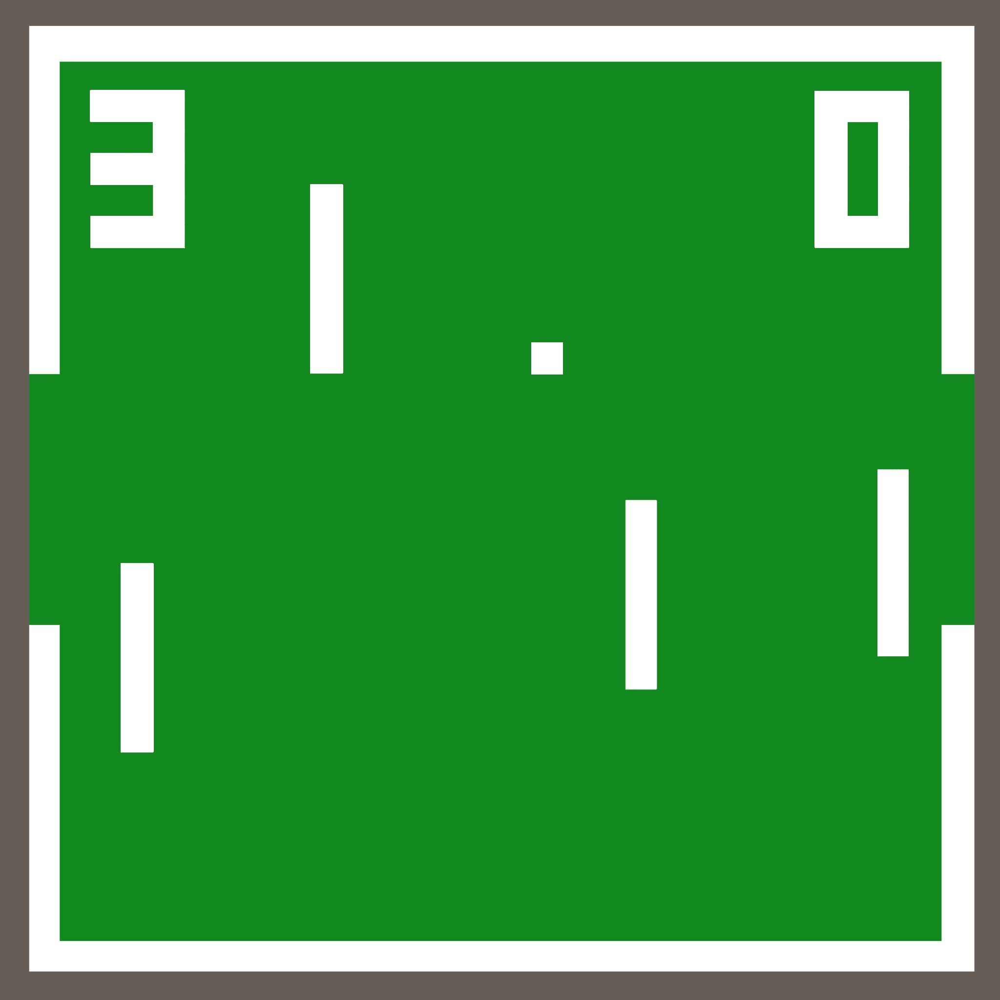
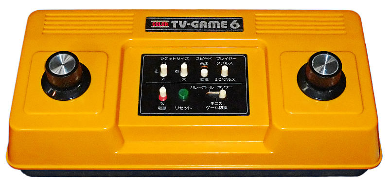
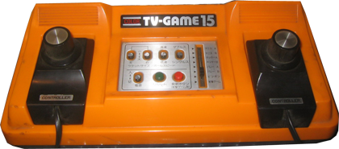
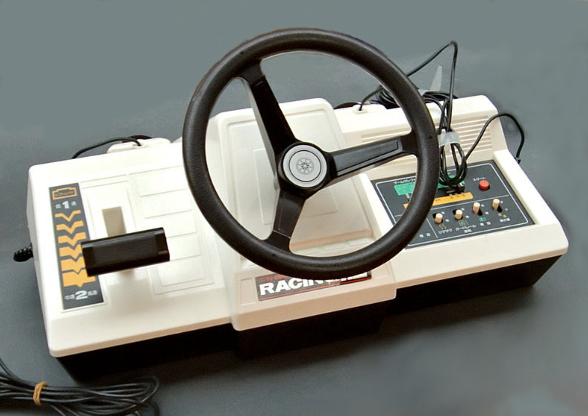
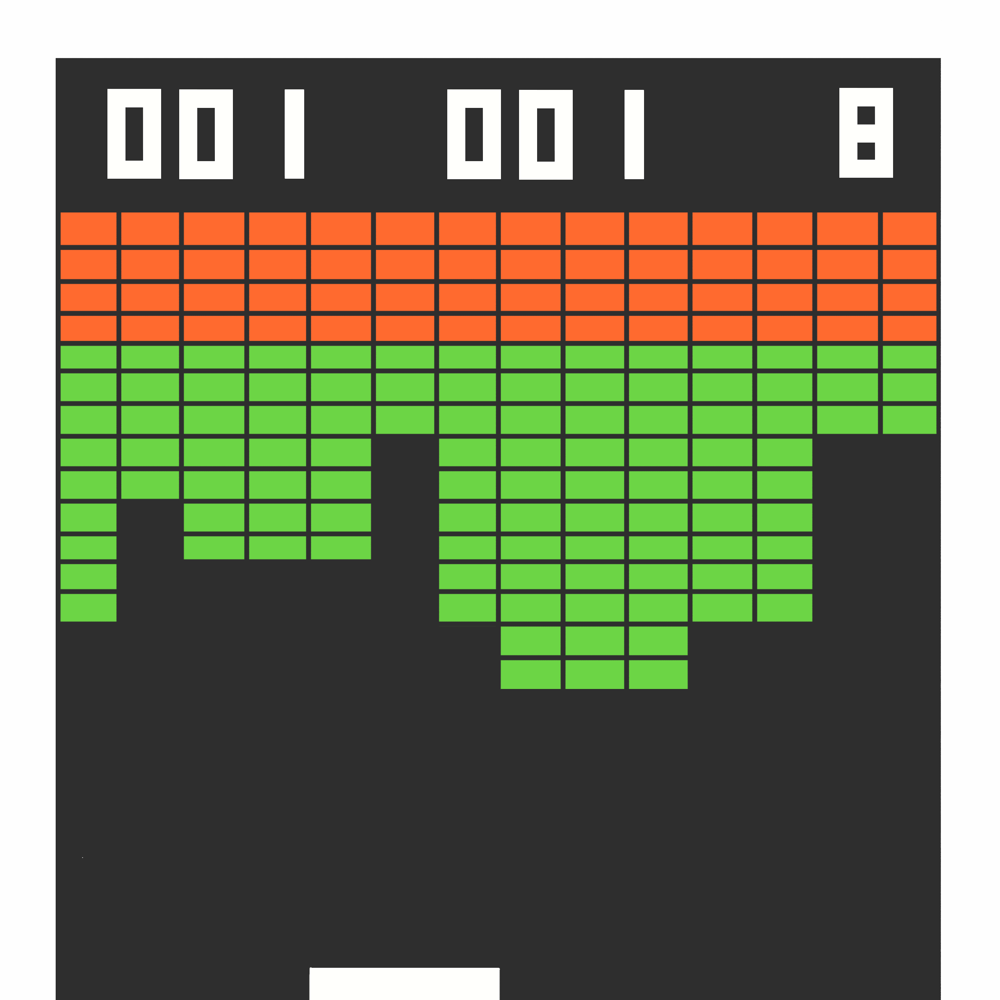
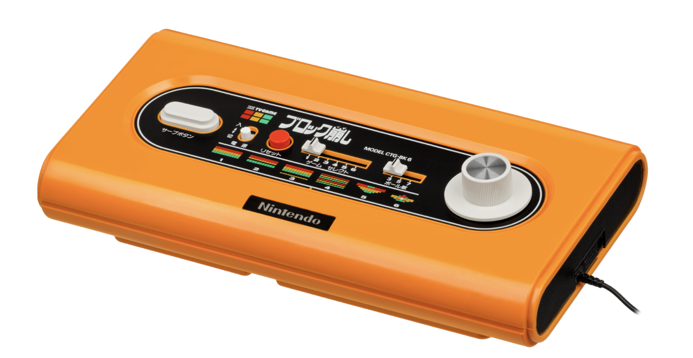
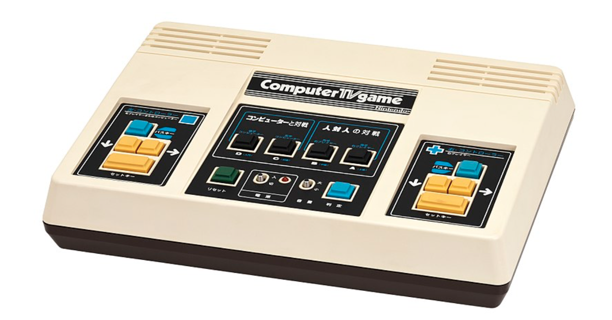

Nintendo Color TV-Gameseries

History
 Nintendo Corporation, Ltd (Japanese for "Nintendo" (任天堂) means "fortune that comes from the sky") is a Japanese game and console developer based in Kyōto, Japan. Before it was involved in video games, Nintendo produced playing cards and toys. In 1970 it abandoned everything to enter the rapidly growing video game market. In 1975 it developed the Othello Computer, with which Othello was played. Shortly afterwards other games such as Sheriff and Space Fever were released. At first it was not very successful. In 1977, with the help of Mitsubishi Electric Nintendo created the Color TV-Game, a series of five consoles containing variations of Pong. He introduced a very important and innovative element: colour.
Color TV-Game 6
The first Color TV-Game model contained six variants of PONG, called "Light Tennis" and was cheaper than its competitors (¥ 9,800). The console was powered by batteries or power supplies sold separately. After the console was released, an improved version came out, with a white outer casing and power supply removed. Later versions were called Color TV Game 15, Color TV Racing 112, Color TV Block Kusure and Computer TV Game. In all, the series sold three million units, making it the world's best-selling first-generation console series. In 1980, 70% of Japanese gamers owned a Nintendo system.

Color TV-Game 15
On 8 June 1977, Nintendo released the Color TV-Game 15, sold for ¥15,000. The console had controllers that could be detached.

Color TV Game Racing 112
On 8 June 1978 the Color TV Game Racing 112 was released. The console was larger than its predecessors and its price was ¥18,000, later lowered to ¥12,000. It was eventually reduced to ¥5,000. It contains a racing game. The console is also equipped with two controllers, so you can play multiplayer games.

Color TV Game Block Kuzush

On 23 April 1979 the console was released at a price of ¥ 13,500. This console is the first 100% Nintendo console. It i salso the first Nintendo video game with the Nintendo name prominently displayed on the console. The console includes six variations of Breakout, an arcade game released in America by Atari. The Nintendo clone is called Block Fever.

Computer TV Game
Released in 1980, it is the last console in the series. The popularity of these consoles was declining and the Computer TV Game was produced in limited quantities. The console contains an advanced CPU, which allows the player to challenge the computer. This addition greatly increased the price of the console.

sources
- https://en.wikipedia.org/wiki/Color_TV-Game
- https://it.wikipedia.org/wiki/Color_TV_Game
- http://www.computinghistory.org.uk/det/20732/Color-TV-Game-6/
- https://nintendo.fandom.com/wiki/Color_TV-Game_6
- https://nintendo.fandom.com/wiki/Color_TV-Game_15
- https://nintendo.fandom.com/wiki/Color_TV_Racing_112
- https://nintendo.fandom.com/wiki/Computer_TV_Game